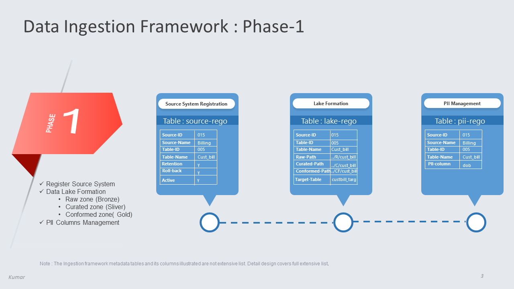
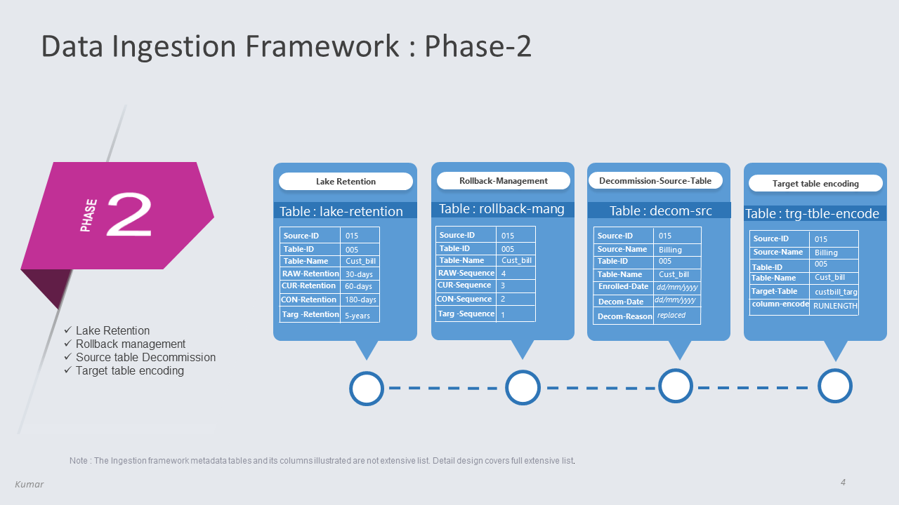
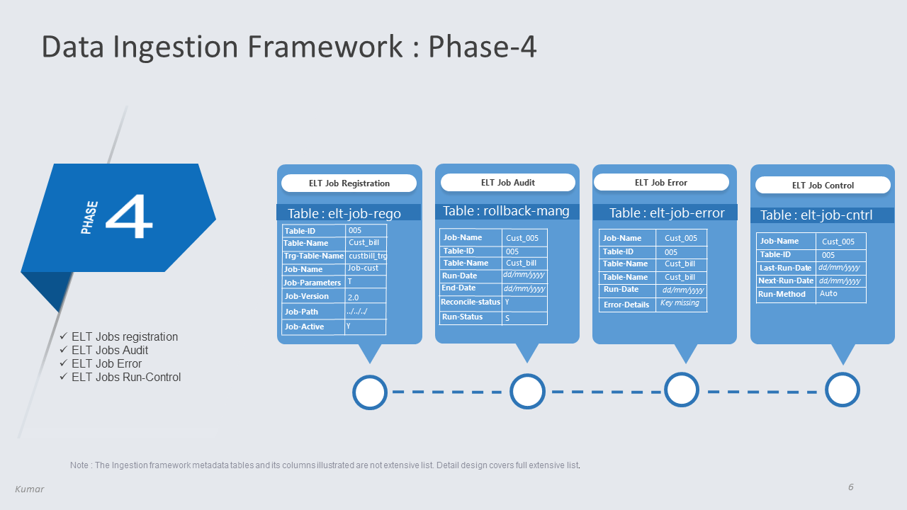
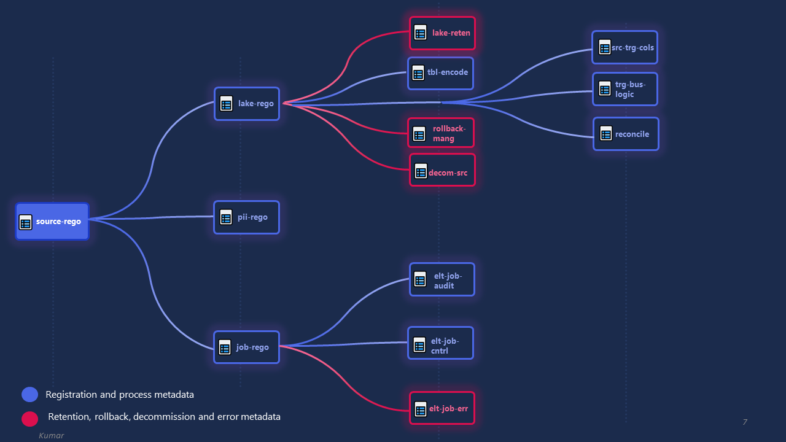

1 / 7
Data Ingestion Overview
2 / 7
Data Ingestion Framework
3 / 7

Data Ingestion Framework Phase-1
4 / 7

Data Ingestion Framework Phase-2
5 / 7

Data Ingestion Framework Phase-3
6 / 7

Data Ingestion Framework Phase-4
7 / 7

Data Ingestion Framework Table Relationship